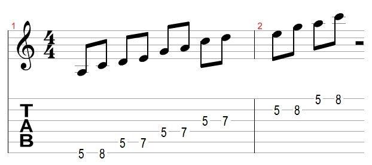
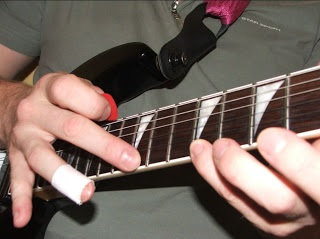
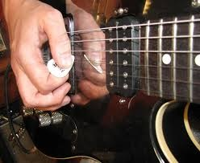

Lessons
On this page you will find various lessons that will beneficial to any guitar player. Whether you're a seasoned player looking for some new techniques to implement into your practicing or a beginner that is picking up the guitar for the first time, these lessons are worth looking at. Lessons are categorized by skill level.
| Skill Level | Description | Link |
|---|---|---|
| Beginner | This lesson will show you how to play basic major scales in different positions on the neck. This lesson is valuable for both beginner and intermediate players as it will help you learn the notes on the neck, which notes go in each scale, and how to use it in your own playing. |  Scales for Beginners |
| Intermediate | This lesson is for guitar players that have a little bit of experience and have a good feel of how to play basic notes and chords. In this lesson, the techniques of "hammer-ons" and "pull-offs" are covered. These techniques differ from standard right-hand picking but can add to your soloing and get different tones from your guitar. |  How to Hammer-On and Pull-Off |
| Expert | This lesson is for the more daring players that have a handle on chords, scales, rhythm, and proper technique but still want more. The technique of "sweep picking" has become popular in guitar soloing due to the greater speed at which you can play arpeggios, which can make your solos sound blazing fast. This is one of the more difficult techniques to learn because the chances are if you're not doing something properly, it just won't work. This one takes a lot of patience and even more practice. |  Guide to Sweep Picking |
Scale Exercises
This section contains tablatures for three basic minor scales to practice: A minor, E minor, and D minor. These scales range from different positions on the neck and can be used together to improvise your own guitar solo. Each scale starts on its root note, then ascends and descends. Practice playing these scales with different rhythms and speeds so you can learn to create your own melody.
{kind=link}
{kind=link}
{kind=link}
See if you can figure out which scale this short ascending lick is from. It's from one of these three scales.